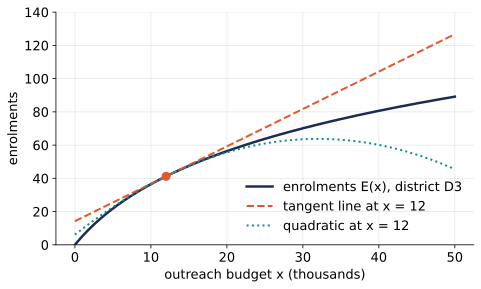
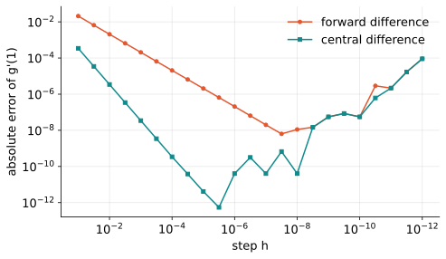

SDAIA Academy · Calculus and Optimisation for Machine Learning
Change and approximation
Week 1: Derivatives as local linear approximations, and three ways to compute one
Data & AI Foundations Track8 weeks + capstone1 session · 1 labFND-MTH-102
The course at a glance
Eight weeks from a single slope to a network you train with your own engine
1 · Change
Derivatives, Taylor, finite differences
2 · Several variables
Gradients and Jacobians
3 · Graphs
The chain rule, backprop by hand
4 · Reverse mode
Your own differentiation engine
5 · Descent
Step size, batches, momentum, loss curves
6 · Shape
Convexity, saddles, curvature
7 · Stability
Log-sum-exp, softmax, penalties
8 · Constraints
Lagrange multipliers, projections
Capstone. A two-layer network on public data, trained with the engine you write in week 4, defended in a ten-minute oral check.
How the course is assessed
Four parts, and two tests you sit without help
Weekly problem sets, auto-checked20%
Two supervised AI-off tests40%
Capstone engine and report30%
Oral check10%
To pass
60% overall and at least 50% on each supervised test.
AI levels
Off: first attempts at problem sets, Lab 3.1, both tests. Tutor: the other labs. Full: the capstone, defended orally.
One case all term
The adult learning charity: evening classes in five districts
A non-profit that teaches adults to read, write and calculate. Its data analyst wants to understand the models before trusting them.
Completion model
The chance a learner finishes, from attendance and weekly hours. Weeks 1 to 3.
Placement model
Three class levels from an entry score. Week 7.
Outreach budget
Enrolment curves for districts D1 to D5, one budget. Weeks 1, 2 and 8.
All synthetic. 600 learners coded LR-0001 onwards, generated with a fixed seed. Week 5 and the capstone use public datasets instead.
Before the first lab
Open the setup check and run it once
Colab: open 00_setup_check.ipynb from the course page and run every cell.
Laptop: clone the repository, then run the commands on the right from labs/.
It lists missing libraries and downloads the two public datasets once.
No lab calls an AI model: no key, no account.
cd fnd-mth-102/labs
uv sync
uv run python _tools/py2nb.py
uv run jupyter lab 00_setup_check.ipynb
This week
Change and approximation
Session 1 · Derivatives as local linesA derivative is the slope of the best straight-line fit near a point; you compute it by hand, symbolically and numerically
Session 1
Derivatives as local lines
Explain a derivative as the slope of the best local linear approximation
Compute derivatives by rule, with symbolic algebra and with finite differences
Choose a finite-difference step by weighing truncation against rounding error
01
Block 1 · What a derivative is
A derivative is the slope a secant settles on as the gap closes
The slope between x and x + h is (f(x + h) - f(x)) / h.
Shrink h: for a smooth function the slope settles on one number, f′(x).
h
slope of x² at 3
1
7
0.1
6.1
0.01
6.01
limit
6
Read it as a rate
f′(x) is how fast f changes per unit of x, right at x: enrolments per extra thousand of budget, loss per unit change of a weight.
Block 1 · The definition that generalises
The derivative gives the best straight-line fit near a point
Local linear approximation
f(x + h) ≈ f(x) + f′(x) · h
The error shrinks faster than h: halve the step and the error falls to about a quarter.
No other straight line through (x, f(x)) does that. This, not "slope of a curve", is the definition that carries to many variables in week 2.
Why machine learning cares
Training changes weights by small steps. Near the current weights, the loss changes by about derivative × step. Every optimiser in weeks 5 to 8 starts from that line.
Block 1 · In the case
District D3's enrolment curve and its tangent at 12 thousand

Synthetic: E(x) = 45 · ln(1 + x / 8), drawn by labs/_tools/make_figures.py.
2.25
enrolments per extra thousand at x = 12
E′(x) = 45 / (8 + x), so E′(12) = 45 / 20.
The tangent says 2 more thousand bring 4.5 enrolments; the curve gives 4.3.
Checkpoint 1
What does the slope promise the finance officer?
District D2's curve has E(15) = 50 enrolments and E′(15) = 1.8 per thousand. The finance officer asks what 2 more thousand of outreach would bring. Which answer is best?
About 1.8 more enrolments
About 3.6 more, slightly fewer since the curve flattens
Exactly 3.6 more enrolments
About 90 more enrolments
Why. Change ≈ E′(15) × 2 = 3.6. The curve bends down as budget grows, so the true gain is a little smaller.
Block 2 · Computing derivatives exactly
Five rules cover every function in this course
Rule
Statement
Example
Power
(xⁿ)′ = n xⁿ⁻¹
(x³)′ = 3x²
Exponential and log
(eˣ)′ = eˣ, (ln x)′ = 1/x
(e^(0.5x))′ = 0.5 e^(0.5x)
Sum and constant
(a f + b g)′ = a f′ + b g′
(4x² - x)′ = 8x - 1
Product
(f g)′ = f′ g + f g′
(x eˣ)′ = (1 + x) eˣ
Chain
f(g(x))′ = f′(g(x)) · g′(x)
ln(1 + x/8)′ = 1 / (8 + x)
Sigmoid. σ(z) = 1 / (1 + e⁻ᶻ) has σ′(z) = σ(z)(1 - σ(z)): you will use it every week.
Block 2 · Rules, done by a program
Symbolic algebra applies the same rules exactly, and can bloat
import sympy as sp
x = sp.symbols("x", real=True)
g = sp.exp(sp.Rational(1, 2) * x) * x**2
dg = sp.diff(g, x)
print(sp.factor(dg)) # x*(x + 4)*exp(x/2)/2
f = sp.lambdify(x, dg, "numpy")
print(f(1.0)) # 4.1218...
Exact
No step size, no rounding until you evaluate. Good for checking a hand derivation.
Expression swell
Differentiate a long composition symbolically and the formula can grow far larger than the program that computes it. Reverse mode (week 4) avoids that.
Block 2 · Taylor expansions
Add the curvature term and the approximation reaches further
Taylor, to second order
f(x + h) ≈ f(x) + f′(x) h + ½ f″(x) h²
The first neglected term is of order h³. The sign of f″ says which side of the tangent the curve lies on.
f″ < 0 (concave): the tangent overestimates. f″ > 0 (convex): it underestimates.
Extra budget, D3 from 12
Tangent off by
2 thousand
0.5%
5 thousand
2.4%
10 thousand
7.2%
20 thousand
19.1%
Checkpoint 2
Which side of the tangent is the curve on?
A completion-rate curve r(h) of weekly hours h has r″(h) < 0 for every h. The analyst uses the tangent line at h = 3 to predict r at h = 6. What can you say before computing anything?
The prediction is too low
The prediction is exact
It depends on which side of 3 we predict
The prediction is too high
Why. A concave curve lies below every tangent line, so any linear prediction away from the point overestimates.
Block 3 · Derivatives from values alone
Finite differences need only the function, and pay with error
Forward
(f(x + h) - f(x)) / h
Truncation error about h/2 · |f″|: first order.
Central
(f(x + h) - f(x - h)) / (2h)
The h² terms cancel: error about h²/6 · |f‴|, second order.
Their real job
Nobody trains a model with finite differences: one extra evaluation per weight is far too slow. They are the referee: every gradient you derive or code in this course is checked against a central difference.
Block 3 · The second error
A float holds about 16 digits, and subtraction throws them away
Machine epsilon, 64-bit: 2.2 × 10⁻¹⁶, the relative gap between neighbouring floats.
For tiny h, f(x + h) and f(x) share most digits; their difference keeps the noisy ones.
Dividing by h magnifies the noise: rounding error ≈ ε |f| / h.
What goes wrong. A gradient check with h = 1e-14 "fails" for a correct gradient. The check is broken, not the gradient.
Block 3 · Two errors, one best step
Error falls with h, then rises: the best step sits in the V

g(x) = e^(0.5x) at x = 1, steps from 0.1 to 1e-12; labs/_tools/make_figures.py.
Theory
This example
Best forward step
√ε ≈ 1.5e-8
3e-8
Best central step
∛ε ≈ 6.1e-6
3e-6
Lowest error, forward
6e-9
Lowest error, central
5e-13
Checkpoint 3
Which step should the gradient check use next?
A colleague checks a hand-coded derivative with a forward difference. With h = 1e-14 the mismatch is 1e-2; with h = 1e-3 it is 1e-4. She concludes the derivative is wrong. Which step should she try first?
A forward step near 1e-8
A forward step of 1e-16
A forward step of 1e-1
A central step of 1e-14
Why. Both of her steps sit on the walls of the V. The best forward step is near √ε, about 1e-8 for a function of moderate size.
Lab 1.1 · 105 min
Three ways to a derivative
Analytic, symbolic and finite-difference derivatives compared across step sizes